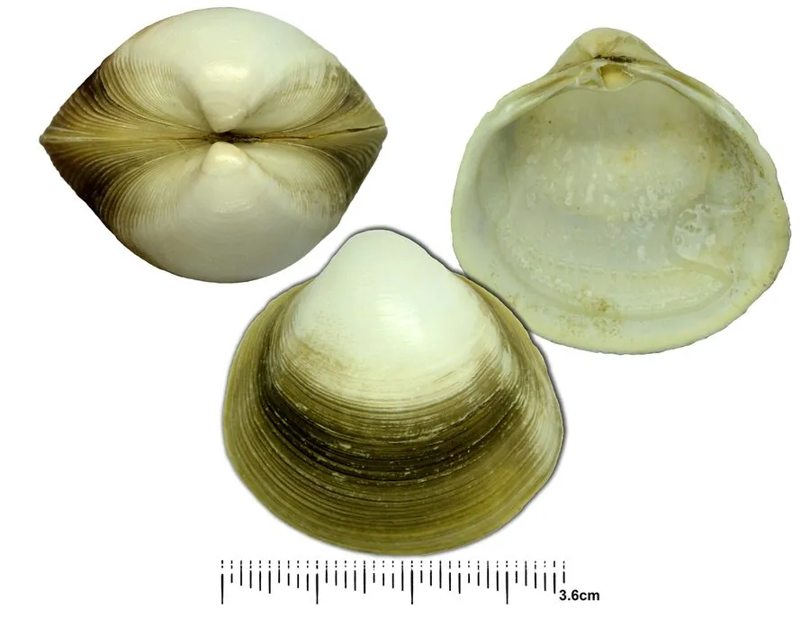

软体动物 · 动物界
四角蛤蜊 Mactra veneriformis

壳形略呈四角形的小型蛤蜊，壳薄而光滑，栖息在潮间带的沙泥滩上，是中国沿海最常见的食用贝类之一。
- 分类
- 门软体动物门纲双壳纲目帘蛤目科马珂蛤科属马珂蛤属
- 栖息环境
- 潮间带中下区至水深数米的沙泥和泥沙底质滩涂
- 地理分布
- 西北太平洋，包括中国南北沿海、日本和朝鲜半岛
- 保护级别
- 尚无保护级别；资源受采捕和滩涂开发影响
物种志
四角蛤蜊的贝壳略呈四角形，壳长约三至五厘米，壳质薄，两壳膨凸，壳面光滑，呈黄白、浅褐至灰白色，有细密的生长纹，壳顶稍突出，前端圆，后端略呈截形，因而整体看上去有四个角。壳内面白色，铰合部有主齿。足部侧扁，水管较短，末端有触手。它靠足部在沙泥中掘穴，滤食时把水管伸出沙面，退潮后穴口常留下小孔。
它分布于西北太平洋，包括中国南北沿海、日本和朝鲜半岛，栖息在潮间带中下区至水深数米的沙泥和泥沙底质滩涂，常成群密集分布，是滩涂上数量最多的贝类之一。它以硅藻和有机碎屑为食，生长较快，一至两年可达商品规格。繁殖期在春夏，雌雄异体，幼虫经浮游阶段后附着到滩涂上。四角蛤蜊肉味鲜美，价格亲民，是中国沿海最常见的食用贝类之一，可辣炒、做汤或制蛤蜊干。目前尚无保护级别，资源受采捕和滩涂开发影响。
形态与习性
- 食性滤食硅藻和有机碎屑
- 壳长约三至五厘米，壳形略呈四角形
- 壳面光滑，黄白至灰白色，有细密生长纹
- 栖息环境潮间带中下区至水深数米的沙泥滩
- 繁殖春夏繁殖，幼虫经浮游期后附着滩涂
- 食用可辣炒、做汤或制蛤蜊干
趣味知识
- 四角蛤蜊的壳后端略呈截形，加上前端和背腹的棱角，看上去像一只小方盒。
- 退潮后的滩涂上，它留下的穴口旁常有一小堆被顶出的泥沙。
- 它生长快、数量大，是沿海最便宜也最常见的蛤蜊之一。